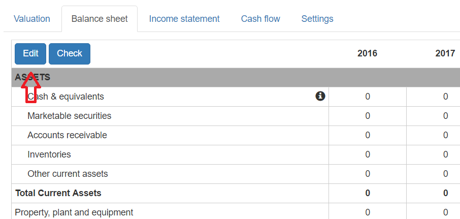
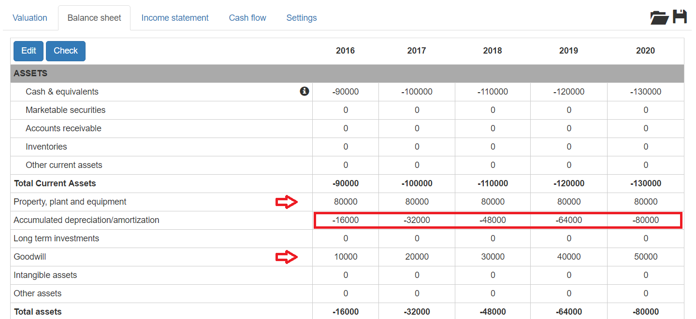
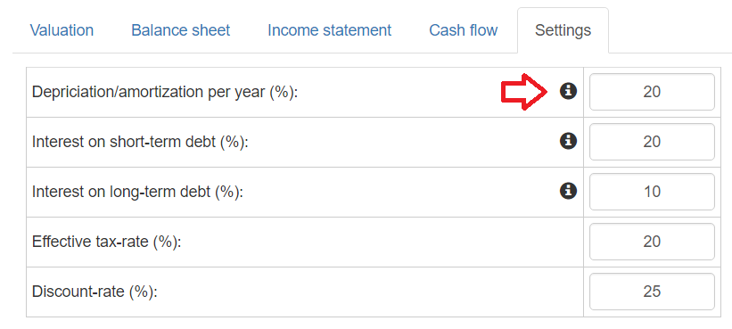
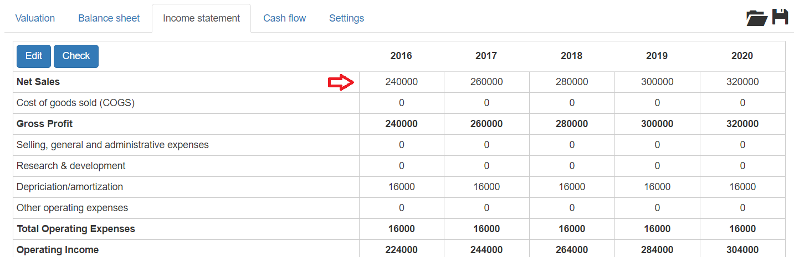
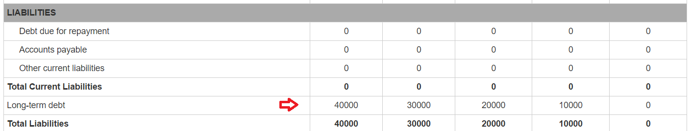
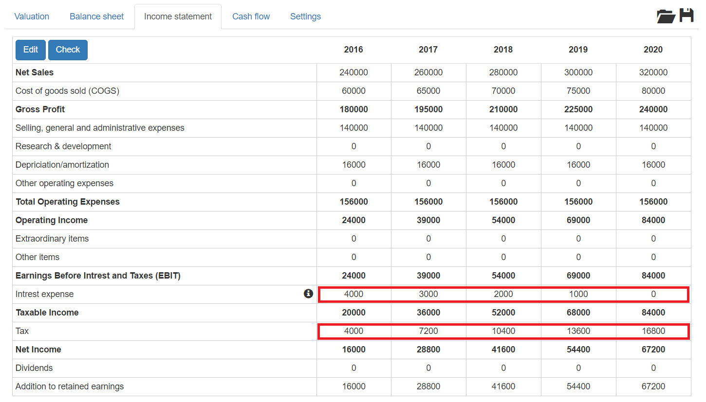
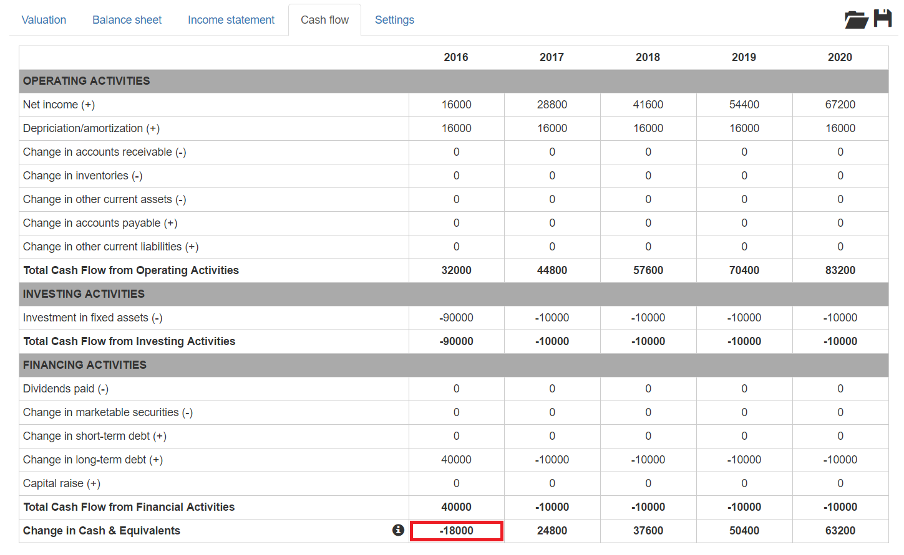
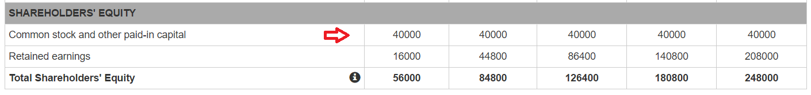
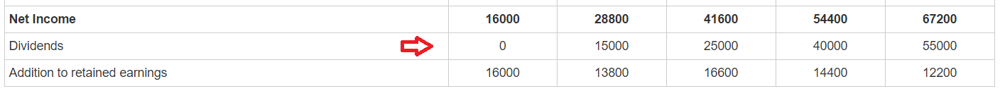
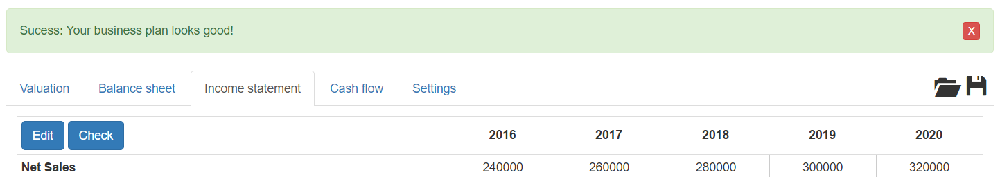

The goal of this step-by-step tutorial is to walk you through the process of sketching out a simple business plan. The guide consits of the following steps:
The first step for any business that wants to make a profit is to purchase the assets that will generate revenues. Let's do it for our business: go to the Balance Sheet tab and click the Edit button.
Once you clicked the Edit button, cells will become editable. Let's say that the equipment that your business needs costs $80000 and that you want to spend $10000 each year on building your brand via advertising and PR.
So, let's enter the $80000 asset in the Property, plant and equipment row and $10000, $20000 etc. in the Goodwill row. When you're ready, click the Done button.
As you are editing the business plan, you will see that some fields are automatically updating. For now, you can ignore most of them but notice how the Accumulated depreciation/amortization is calculated for you automatically. The rate at which your equipment depriciates each year can be set on the Settings tab along with a bunch of other constants. For now, leave the constants at their default values.
Now that your business has assets, it is time to estimate your sales. Let's say that in the first year, your business will sell $240000 worth of goods, and - due to your successful marketing efforts - this number will grow by $20000 each year. Let's put these numbers into our business plan.
Go to the Income Statement tab, click the Edit button and enter 240000, 260000, 280000, 300000 and 320000 in the Net Sales row.
At this point, our business is creating revenues. That's awsome but we haven't estimated our costs yet. Let's go ahead and do it.
Let's assume that the cost of manufacturing each item we sell is 1/4 of its sales price and that your business will employ 3 people: a manager and two more employees. The manager's annual salary is $60000, those of the employees are $35000 each. Let's not forget the $10000 yearly cost that you will spend on building your brand.
On the Income Statement tab, click the Edit link and enter
Notice, that the Gross profit, the Total Operating Expenses and the Operating Income is calculated automatically as you enter the costs.
The next step is to plan how you will finance your business. Let's say that you want to finance half of your equipment from a bank loan which you want to pay back in equal amounts till the end of your planning period. Go to the Balance Sheet tab, click the Edit button and enter 40000, 30000, 20000 and 10000 for the first 4 years in the Long-term debt row.
Notice, how the Interest expense (along with Tax) is calculated for you in the Income Statement.
At this point, the good news is that the Net Income is positive for all years which means that our business is profitable. To plan the rest of the financing, the Cash Flow tab will be of great help. So, let's have a look at the Cash Flow:
In the first year, $18000 of financing is missing. Let's say that we want to have about $20000 of cash on our bank account in the first year; just to make sure that if any unexpected expenditure occurs we don't run out of cash. To achive this, $40000 of capital will have to be provided upon founding the company. So let's go to the Balance Sheet tab and enter $40000 in the Common stock and other paid-in capital row.
The final step is to plan how much dividends can be paid and when. From the investors point of view the more and the sooner the better. The upper limit is that the payouts shouldn't put the company at the risk of running out of cash. Let's go to the Income Statement tab and enter 15000, 25000, 40000 and 55000 starting from the second year in the Dividends row.
Notice, how what is not paid out from the Net Income is added to the Retained earnings row in the Balance Sheet each year.
Now, that your Business Plan is ready, click the Check button to see if you made any mistakes. If you did everything right you should get a Success message.
As a last step, let's examine how much the business is worth. To do that, go to the Valuation tab. From the investors' point of view, the business will generate cash flows in the form of
If these values are discounted with the opportunity cost of capital and the initial investment is substracted, the net present value of the business can be calculated. This then can be used as a go-ahead criterion: if the NPV is greater than 0 then - from a financial point of view - the investment should be given a green light.
Another useful metric is the internal rate of return (IRR). The IRR equals the discount factor at which the NPV of the investment would be zero.
You can save the plan that you have created using the Save button at the upper right corner or you can download it from here.